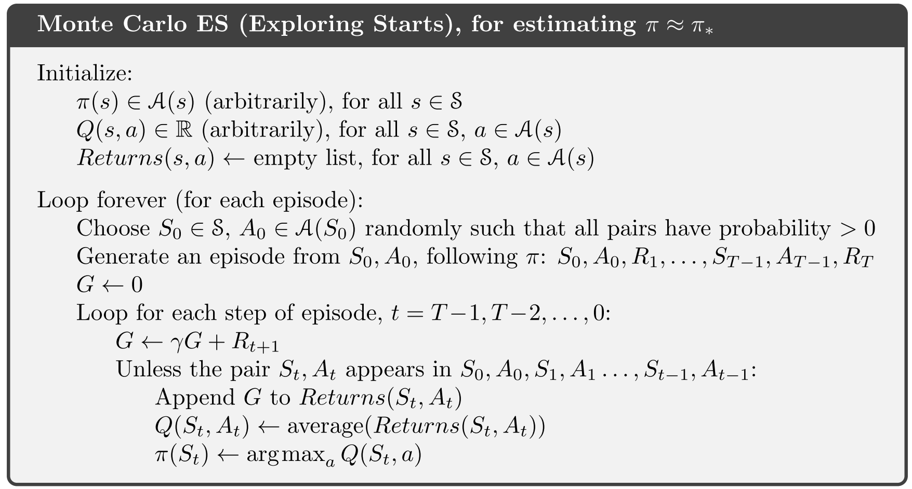

强化学习导论（五）- 蒙特卡罗方法¶
本章主要讲强化学习中的蒙特卡罗方法。
Monte Carlo Methods(Wiki):
蒙特卡罗方法，也称统计模拟方法，是1940年代中期由于科学技术的发展和电子计算机的发明，而提出的一种以概率统计理论为指导的数值计算方法。是指使用随机数（或更常见的伪随机数）来解决很多计算问题的方法。
Monte Carlo Methods:
在本书中，蒙特卡罗方法具体指基于样本返回值的均值，用于解决强化学习问题的方法。
由于蒙特卡罗方法基于样本返回值来解决问题，所以需要得到明确的反馈值，因此本章主要基于片段式任务（episode tasks）进行探讨（并且 \gamma=1），以 episode 为单位，当一个片段结束，才去通过整个片段的反馈来进行相应调整。
5.1 Monte Carlo Prediction¶
在我们使用蒙特卡罗方法估计 return 时，一般有两种主要的统计方法：
- first-visit MC method：
在一个 episode 中，对于每个状态 s （或「状态-行动组合」 s-a），只考虑第一次进入 s （或 s-a）之后的 return 来对 v_\pi(s) (or q_\pi(s,a)) 进行估计，往后再遇到 s（或 s-a）则不再统计。

- every-visit MC method：
every-visit 总体与 first-visit 相似，唯一的差别在于，在一个 episode 中，所有以 s （或 s-a） 为出发点的 episode 都会对其 return 进行统计，进而用于估计 v_\pi, q_\pi 。
根据大数定律，容易分析知，他们均能收敛到 v_\pi(s)。
在一些牌类游戏中，原则上我们是可以将其视作有限 MDP 问题，比如我们将每局牌视作一个 episode ，然后根据「赢 / 输 / 平」给定奖励值 +1 / -1 / 0 ，然后就按我们之前讲的方法来做。
然而实际操作中，我们很难求出这个问题背景下的「状态转移概率」，简单而言，即使我们完全清楚环境的变化机制 p(s',r|s,a) ，也很难把问题背景理解「透彻」，我们很难一一分析列举出所有可能的情况，以及他们之间的关系（虽然理论上是肯定可以穷举出来的），所以需要用到蒙特卡罗方法直接根据大量「经验」来暴力估计出我们想要的东西。通俗地讲，就是：「我们虽然没有去具体分析环境的变化机制，但是不用想那么多，照着以前的经验做就是了」。
5.2 Monte Carlo Estimation of Action Values¶
问题¶
如果给定一个策略，在这个策略下去模拟，可能会有不少「状态-行动组合（state-action pair）」从来没尝试过，也就是某些状态的样本量可能为 0 ，对于随机模拟方法而言，这样估计出来的东西显然会有偏差，就像第二章讨论的那样，得多做一些「探索（exploration）」。
思路¶
exploration start:
既然策略 \pi 是给定的，在模拟过程中，基于这个策略一步一步行动下去，我们很难改变什么，唯一能任意指定的，就是初始状态，所以在生成模拟片段时，可以考虑随机指定任意状态为初始状态，这样只要我们生成的模拟片段足够多，一样能确保每个状态都能被我们访问足够多次。我们称这样指定的初始状态为 exploration start 。
不过，这个方法有相当大的局限性：
- 在一些特殊情况下，我们必须得跟环境交互才能学习策略，这时候便不能指定初始状态了
- 操作起来麻烦，而且依然考虑得不够全面
5.3 Monte Carlo Control¶
目标¶
通过蒙特卡罗方法来估计最优策略。
方法¶
上一章讲过，GPI 模型非常通用，能够描述绝大多数强化学习方法，而这一章我们依然是基于 GPI 模型，通过「值的估计」和「策略改进」这两个环节交替作用，最终得到最优策略。
-
Policy evaluation: 使用蒙特卡罗方法来根据经验模拟估计，而不是像上一章的方法直接计算。这一小节的算法需要有 exploring start 。
-
Policy improvement: 跟上一章一样，采用贪心策略来改进当前策略 \pi(s)\doteq \max\limits_aq(s,a) 。
Monte Carlo ES (Monte Carlo with Exploring Starts)¶
下面是带有「探索初始态」的蒙特卡罗方法的伪代码：

5.4 Monte Carlo Control without Exploring Starts¶
目标¶
之前提到，exploration start 这样的条件，仍然有不少缺点，缺乏泛用性，我们需要其他的办法。
方法¶
我们先提两个概念：
-
On-policy: 直接对我们的决策策略进行估值和改进。
-
Off-policy: 结合一个其他的策略，来对我们的决策策略进行估值和改进。
这一小节我们先讲 On-policy 。
在 On-Policy 方法中，我们的策略一般得是「soft」的： \pi(a|s)>0, \forall s \in \mathcal S, a\in\mathcal A(s)。直白点讲，就是所有的情况都要被考虑到，即使某个 action 并不优秀，也不能直接将其选取概率设为 0 ，这样的策略显得不那么绝对，体现出一种「趋势性」：好的 action 更容易被选上，不好的 action 也有一定的机会。
\varepsilon-soft policy:
-
若 a 为非贪心策略（exploration），则 \pi(a|s)=\frac{\varepsilon}{|\mathcal A(s)|}
-
若 a 为贪心策略（exploitation），则 \pi(a|s)=1-\varepsilon + \frac{\varepsilon}{|\mathcal A(s)|}
On-policy first-visit MC control¶
基于 On-policy 方法，我们可以给出下面的算法来估计最优策略：

policy improvement theorem:
GPI 模型并不要求我们的策略全程都是贪心策略，只需要「渐渐变得贪心」就可以了，在我们上面的算法中，我们的 \varepsilon-soft 策略会渐渐变成一个 \varepsilon-greedy 策略，并且可以证明，通过贪心方法确实能够改进 \varepsilon-soft 策略，证明如下：
设 \pi' 为贪心改进后的策略，则有
而原本的 \varepsilon-soft 策略 \pi，我们记其概率分布为
接下来，可得
记 M=\max\limits_aq_\pi(s,a)，我们先证明不等式 \displaystyle \max\limits_aq_\pi(s,a)\geq\sum_a\frac{\pi(a|s)-\frac{\varepsilon}{|\mathcal A(s)|}}{1-\varepsilon}q_\pi(s,a)：
将不等式代回前面，得到
所以得出结论，对策略 \pi 做出题述的改进后得到的 \pi' 确实要优于 \pi 。
5.5 Off-policy Prediction via Importance Sampling¶
目标¶
在我们的问题中，目标策略经常是确定性的贪心策略（与 soft 相对，确定性策略选出的 action 很确定），这种情况下，我们若要使用 On-policy ，不得不又重新考虑 exploration start ，为了避免这个情况，我们要考虑一种 Off-policy 的方法。
与 On-policy 不同的是，我们去学习一个最优策略，并不一定要在调整这个策略的同时也跟着它走，这一节采用的 Off-policy 方法则是用一个「行为策略」来生成行动，来对我们的「目标策略」进行优化，这样的一个好处是，我们可以通过辅助性的行为策略来做出探索行动，而我们要学习的目标策略，就不用再因 exploration 而不得不加入一些不那么好的行动。
而将两个策略分开最重要的好处，正是我们可以通过 soft 的行为策略去生成探索 action ，而目标策略则保持「确定性」，解决了前面提出的问题，进一步加强了算法的泛用性。
-
目标策略 (\pi): 被学习的策略
-
行为策略 (b): 用来再学习过程中生成 actions 的策略
行为策略需要是完全已知的，并且需要能被目标策略覆盖：\pi(a|s)>0\Rightarrow b(a|s)>0 ，即目标策略所有可能采取到的行动，在行为策略中其被选取的概率也必须大于 0 。
原理¶
重要性采样:
重要性采样（importance sampling）是统计学中估计某一分布性质时使用的一种方法。该方法从与原分布不同的另一个分布中采样，而对原先分布的性质进行估计。
易知，
我们称 \rho=\frac{f(x)}{g(x)} 为重要性采样比例，这样，对于一个未知的分布 f ，若已知分布 g ，并且能求出比值 \frac{f(x)}{g(x)} ，便能方便地在 g 分布下对 x 进行估计。
在我们这个问题中，因为有状态条件，所以应该求条件期望，易分析知条件期望同样适用：
因此，对于我们具体的问题，我们可以按下面的方法来进行估计：
对于一个 episode ，其子序列的概率为
计算出重要性采样比例：
从上面可以看出，我们只需要知道策略是怎样的，而无需去关心环境上的细节（也就是不用知道状态转移概率 p ）
有了前面的准备，我们可以推出：
两种估计方法¶
简单平均（Ordinary Importance Sampling）¶
-
\displaystyle V(s)\doteq\frac{\sum_{t\in\mathcal T(s)}\rho_{t:T(t)-1}G_t}{|\mathcal T(s)|}
-
\mathcal T(s): 访问到状态 s 的时间点集合
-
T(t): 以时间点 t 开始的 episode 的终止时间点
-
优点：无偏估计
-
缺点：方差较大，不稳定
加权平均（Weighted Importance Sampling）¶
-
\displaystyle V(s)\doteq\frac{\sum_{t\in\mathcal T(s)}\rho_{t:T(t)-1}G_t}{\sum_{t\in\mathcal T(s)}\rho_{t:T(t)-1}}
-
优点：方差较小
-
缺点：有偏估计（但是渐进无偏）
举例：简单平均有可能导致无穷大方差¶

首先，对于加权平均，我们易分析得：
-
如果以行动 left 收尾，显然会返回 G_t = 1 ，此时 \rho =\frac{1}{0.5}=2，那么必然有 V(s) = 1
-
如果以行动 right 收尾，显然会返回 G_t = 0 ，此时 \rho = 0 ，易分析知 V(s)=0
可以看出，加权平均下的估计是稳定的，方差很小。
而对于简单平均，由于
因为 \bar{V} 有限，我们只需讨论 \mathbb{E}[V^2]:
所以，从这个例子可以可以看出，简单平均是相当不稳定的。
5.6 Incremental Implementation¶
第二章讲过增量执行式，可以通过增量计算来节省内存并且提高计算速度，这个思路我们同样能用在这一章的算法里。
将 \rho_{t:T(t)-1} 简记作 W_k ，即有 \displaystyle V_n = \frac{\sum_{k=1}^{n-1}W_kG_k}{\sum_{k=1}^{n-1}W_k} ，记 C_n = \sum_{k=1}^nW_k ，那么
于是便能得到下面的增量执行式：
下面是结合增量执行的 Off-policy MC 算法

这个算法的终止条件是 W=0\Rightarrow \pi(A_t|S_t)=0 ，这意味着行为策略 b 生成了一个目标策略 \pi 中没有的 action ，这样就没有继续学习下去的意义，所以需要终止此段 episode ，开始下一段 episode 的学习。
5.7 Off-policy Monte Carlo Control¶
有了前面的准备，便能最终得到估计最优策略的 Off-policy MC 算法：

- 这个算法里，我们给的 \pi 是确定性而非 soft 的，但是将 b 设为 soft 的，以确保 action 的 exploration ，并且同时维持 \pi 的确定性
- 注意到，W 的更新式理应写作 W\leftarrow W\frac{\pi(A_t|S_t)}{b(A_t|S_t)} ，但这里写作 W\leftarrow W\frac{1}{b(A_t|S_t)} ，这是因为本例中的目标策略是确定性的，所以每个状态下，采取的行动是确定的，因而 \pi(A_t|S_t)=1
- 终止条件 A_t\neq \pi(S_t) 的原理和前面相同，即此时没有了继续学习下去的意义，应当停止当且 episode 并进入下一片段
Others¶
本书后面几小节仅简要介绍了一些更特殊的估计 V(s) 的方法，但未作进一步论证，此处略去。